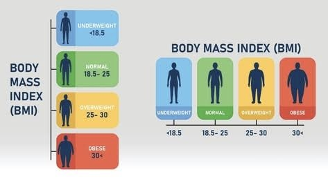

¿Qué es el IMC?
Es una medida que relaciona el peso con la estatura. No determina por sí sola el estado de salud.
Leer más →
Se calcula dividiendo el peso en kilogramos entre la estatura en metros al cuadrado. Su interpretación depende de la edad y otros factores.